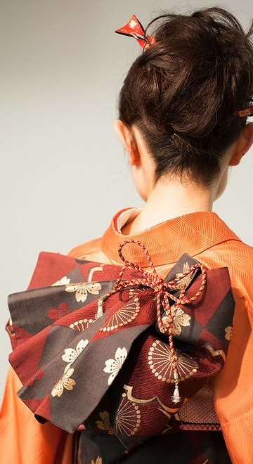

Kimono: Traditional Japanese Clothing The kimono is a traditional Japanese garment that is worn today primarily for special occasions such as weddings, festivals, and Coming of Age ceremonies. To wear a kimono, one wraps the T-shaped fabric around the body—layering the left side over the right (layering the right over the left is the method used for the deceased)—and secures it at the waist with a wide sash known as an "obi". Kimono come in a wide variety of colors and patterns, often featuring designs inspired by Japanese nature and the changing seasons, such as seasonal flowers or cranes. The specific type of kimono chosen depends on the occasion, the wearer's age, and the level of formality required. Furthermore, the names and types of kimono vary according to the situation and style; for instance, the "yukata"(wearing in summer), the "hakama" (designed for ease of movement and commonly worn at shrines), and the "hōmongi" (worn when visiting someone's home) each serve distinct purposes and carry different connotations. Although most modern Japanese people wear Western-style clothing in their daily lives, the kimono remains an essential element of Japanese culture and tradition.